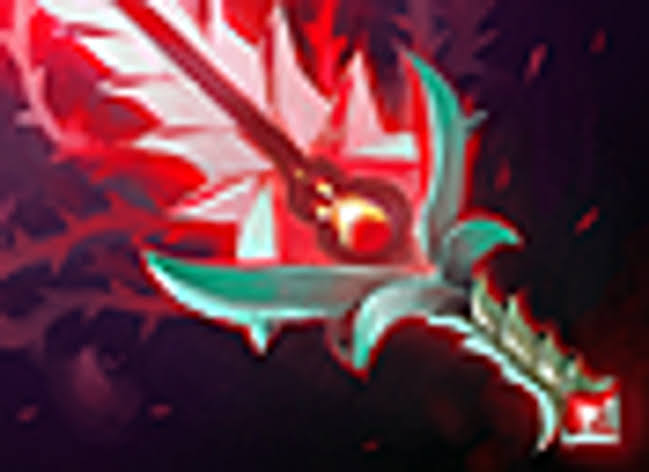
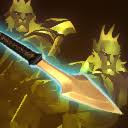
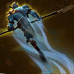
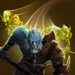
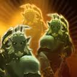

Глобальное доминирование за счет иллюзий
В актуальной мете Phantom Lancer остается одним из самых сильных и неконтрящихся керри поздней стадии игры. При правильном микроконтроле и умении прятать настоящего героя среди фантомов с помощью Doppelganger, вы можете в одиночку уничтожать командные драки, выжигать всю ману вражеским саппортам и создавать колоссальное давление на линиях.
Сборка артефактов Pro Tracker Meta Build

Power Treads
Лучший сапог для иллюзионистов. Обязательно переключается на ловкость при атаке и фарме, либо на силу, когда нужно впитать урон.

Bloodthorn
Новый фундаментальный артефакт текущей меты. Накладывает на цель критический урон от атак всех ваших многочисленных иллюзий и дает сильный взрыввой спайк для мгновенного соло-таргет пикоффа.

Manta Style
Ультимативный выбор для выживания и усиления атаки. Позволяет сбрасывать направленные безмолвия, оцепенения, а также моментально плодит еще две сильные иллюзии.

Aghanim's Scepter (Spirit Lance Buff)
Критически важный слот для раннего подключения к дракам и быстрого фарма. Превращает ваше первое умение в мощный рикошет, который отскакивает по целям и спавнит иллюзии на расстоянии.

Eye of Skadi
Главный лейт-слот для обеспечения выживаемости всей вашей армии. Дает огромные статы, которые полностью дублируются всеми клонами, и режет лечение, регенерацию и вампиризм вражеских героев.
Приоритет способностей Skill Progression

Spirit Lance MAX 1
Основной инструмент для преследования, нанесения урона издалека и быстрого создания первой иллюзии.

Phantom Rush MAX 2
Пассивное сближение. Дает взрыввой бонус к ловкости и скорости бега при атаке цели, ускоряя фарм лесных лагерей.

Doppelganger Lvl 1
Важнейшее умение для побега и уклонения от летящих заклинаний. На пару мгновений убирает героя с карты, путая врагов.

Juxtapose ULT (Lvl 3)
Сердце героя. Дает пассивный шанс создать иллюзию при любой атаке. Прокачивается на 6, 12 и 18 уровнях.